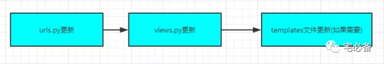
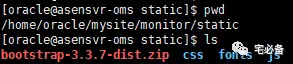
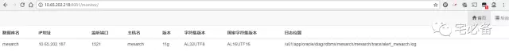

开始我们的第一个网页
上节讲了如何利用Django建立自己的第一个网站以及操作MySQL数据库
这节讲如何利用Django建立我们的第一个界面
首先看下利用Django 新建页面的步骤

开发环境
操作系统:CentOS 7.3
Python版本 :2.7
Django版本: 1.10.5
操作系统用户:oracle
urls.py设置
修改mysite/urls.py文件
from django.conf.urls import include, url
from django.contrib import admin
urlpatterns = [
url(r'^admin/', admin.site.urls),
url(r'^monitor/', include('monitor.urls')),
url(r'^', include('monitor.urls'))
]
这里的include设定指的是monitor 应用的url跳转到monitor文件夹下面的urls文件
新建 monitor/urls.py
from django.conf.urls import url, include
from monitor import views
urlpatterns = [
url(r'^$', views.index, name='index'),
]
^代表以后面的字符开头
$代表以前面的字符结尾
views.py设定
这里新建index函数对应urls.py文件中的定义
这里摘取一部分，其他的查看我的Github主页
from django.http import HttpRequest
from django import template
from monitor.models import *
def index(request):
result=oraclelist.objects.all().order_by('tnsname')
dic={'result':result}
return render_to_response('index.html',dic)
Django 可以使用一些方法获取数据库的信息，如上面的objects.all方法用来获取所有行，其结果为字典，之后将其重定向到index.html文件
其他可参考如下链接
https://docs.djangoproject.com/en/1.11/topics/db/queries/
安装bootstrap
前端的界面我们采用bootstrap，我们需要下载bootstrap文件放在static目录中
下载 bootstrap 3
http://getbootstrap.com/getting-started/#download
将所有文件夹(css/fonts/js)放在 static目录

模板文件
在monitor/目录新建 templates目录用于存放模板文件
[oracle@asensvr-oms monitor]$ mkdir -p ~/mysite/monitor/templates
新建index html文件
vim index.html
<h1 class='page-header'>数据库概况</h1>
<div class="table-responsive">
<table class="table" id='table1' class="table table-striped" width='1052'>
<thead>
<tr>
<th>数据库</th>
<th>IP地址</th>
<th>端口</th>
<th>主机名</th>
<th>版本</th>
<th>字符集</th>
<th>国家字符集</th>
<th>日志位置</th>
<!-- <th>用途</th> -->
</tr>
</thead>
{% for i in result %}
<tbody>
<tr>
<td>{{i.tnsname}}</td>
<td>{{i.ipaddress}}</td>
<td>{{i.port}}</td>
<td>{{i.hostname}}</td>
<td>{{i.version}}</td>
<td>{{i.charset}}</td>
<td>{{i.ncharset}}</td>
<td>{{i.alertpath}}</td>
<!-- <td>{{i.content}}</td> -->
</tr>
</tbody>
{% endfor %}
</table>
</div>
</div>
同样Django也提供了非常强大的模板功能，可以直接将变量传至html文件
大家可先照着我的写，其实固定常用的就那么几个，可根据单词猜出意思
具体可参考:
https://docs.djangoproject.com/en/1.11/topics/templates/
http://www.runoob.com/django/django-template.html
查看页面
[oracle@oms mysite]$ python manage.py runserver 0.0.0.0:8081

这样我们就通过网页的形式展示了数据库的基本信息 方便我们日常查看数据库基本信息
源码地址
源码请查看我的GitHub主页
https://github.com/bsbforever/wechat_monitor
今天介绍了介绍了如何建立第一个页面